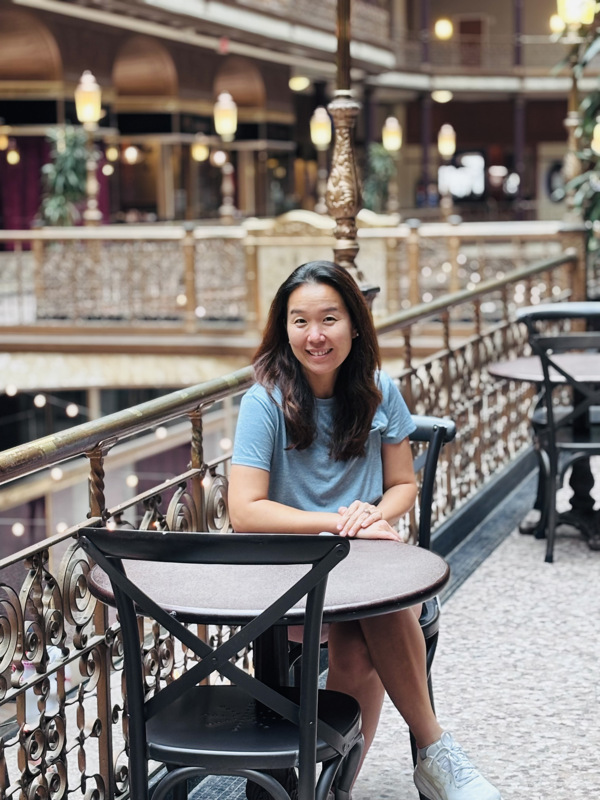

Welcome to my website!
Minah Oh, Ph.D.
Professor of MathematicsJames Madison University
I am a mathematician specializing in Numerical Analysis, a branch of mathematics that uses math to construct and analyze computer algorithms for meaningful real-world problems. Involving undergraduate students in mathematical research projects as well as providing quality education to them is a significant part of my career.
I am involved at the local and national level in helping young girls and women to be successful in their education and career in mathematics, and I also have a passion for popularizing mathematics to the general public.
Contact
Mailing address
Department of Mathematics and Statistics
305 Roop Hall MSC 1911
James Madison University
Harrisonburg, VA 22807
ohmx (at) jmu (dot) edu